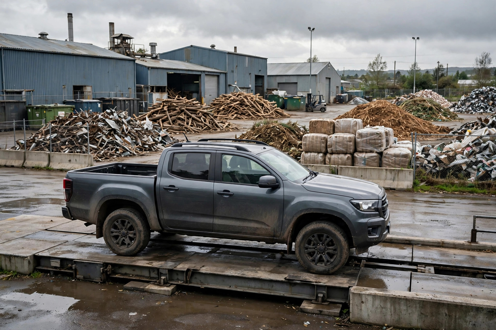

Weekend Junk Removal and Hauling Gigs: The Truck, the Fees, and What the Job Really Pays
A full truck at a full truck price sounds like a day's pay settled in one load. It is not. The price the customer pays has to cover the tipping fee at the depot, the fuel for two trips, the helper standing beside you, and the hours the job actually takes, including the depot queue on a Saturday morning. What is left after all of that, divided by all of those hours, is what the job really pays. Most guides quote the truck price and stop. This one starts with who should walk away, then works a Toronto Saturday all the way down to the hourly line.
Who should not do this, and the kill criterion
Read this section first, because it is cheaper than learning it with a loaded truck. Do not start if you cannot lift heavy items safely or have nobody to call for the two person jobs, because a solo operator attempting a piano or a cast iron tub is an injury looking for a date. Do not start if your only vehicle is a leased car with no way to carry a load, or if your Saturdays are already the recovery day your day job depends on. And do not start by buying equipment: the guides pushing trailers quote a lean start of US$8,600 to US$19,600 with a dump trailer for someone who already owns a pickup (s2, checked 2026-11-12), and spending that before a single paying job exists is how a side hustle becomes a debt with a hitch.
The kill criterion, set before the first job: run six Saturdays with a truck you already have access to, tracking revenue, fees, fuel, helper cost, and total hours. Continue only if the contribution per hour, calculated the way the Saturday below is calculated, clears the floor you would accept from other weekend work, and if at least half your jobs came from referrals or repeat customers rather than paid ads. If after six Saturdays the work only pays when your hours are counted as free, stop. The truck keeps its value. A worn out back does not.
What the customer is actually paying for
Here is the fact that shapes every quote in the GTA: if a household gets City of Toronto garbage collection, oversized items, appliances, and electronics set out on garbage day are collected at no charge per pickup (s3, checked 2026-11-12). The city picks up from the curb only, which is exactly the gap you sell into. Your customer is paying for labour and timing: carrying a sectional down two flights today, clearing a garage this weekend before a move, taking the renovation pile the city will not collect at the curb at all.
That framing protects your pricing. A customer comparing your quote to free curbside pickup is comparing unlike things, and saying so plainly, with the free option named, builds more trust than discounting. It also tells you which jobs are yours: indoor, heavy, urgent, or bulky beyond the curb. A single bagged item at the curb that the city would take for free is not your job at any price that covers a depot run.

Toronto disposal math: the fee is per tonne
Disposal is not a flat nuisance fee. The City of Toronto charges for garbage and renovation waste at its drop-off depots by weight: $189.86 per tonne, with a minimum fee of $19 covering the first 100 kg, and a deposit of at least $40 taken before you unload (s1, price checked 2026-11-12). The city's own worked examples make the scale concrete: 205 kg of garbage costs $38.92, and 800 kg costs $151.88 (s1). A US industry guide puts dump fees at 10 to 20 percent of revenue for established operators (s2), which is a useful check on your own Saturdays: if your fee share runs far above that band, your prices are too low or your loads are too heavy for their size.
Weight is the trap inside volume pricing. A truck bed of broken concrete or wet renovation debris weighs far more than the same bed of furniture, so a price quoted by volume on a heavy load hands the margin to the depot. Price heavy loads with the weight in mind, confirm what is in the load before quoting a firm number, and keep two free facts in your pocket for customers: household hazardous waste and electronic waste drop off free at Toronto depots (s1), and the city's free Toxic Taxi picks up 10 to 50 litres or kilograms of hazardous waste per visit (s3). Never charge a customer to haul paint and solvents you could direct them to drop off at no cost. That honesty is a referral engine.
One Saturday, worked honestly
Published GTA prices, checked in October 2026 from three local companies' own listings, start around $99 to $299 for a quarter load and run $449 to $575 for a full truck (s3, price checked 2026-11-12). The Saturday below is a labelled scenario built inside those published ranges, with Toronto's own fee examples as the disposal costs. Fuel and helper figures are scenario assumptions, stated so you can swap in your own.
| Line | Job 1, morning | Job 2, midday |
|---|---|---|
| Job | Quarter load, garage furniture | Full load, basement and renovation clearout |
| Price charged (scenario, inside published GTA range) | $199 | $500 |
| Load weight | 205 kg | 800 kg |
| Toronto tipping fee (city's own worked examples, s1) | $38.92 | $151.88 |
| Day total | Amount |
|---|---|
| Revenue, two jobs | $699 |
| Tipping fees, $38.92 plus $151.88 | $190.80 |
| Fuel for job and depot trips (scenario assumption) | $40 |
| Helper, 5 hours at $20 per hour (scenario assumption) | $100 |
| Contribution before vehicle wear, insurance, and tax | $368.20 |
| Your total hours: loading, driving, depot runs, sorting, quoting the next job | 7 hours |
| Contribution per hour worked | About $52.60 |
That is a good Saturday, and the table still flatters the result in one way: no line yet reserves anything for tires, brakes, and the truck's slow wear. Set a fixed amount aside from every job for vehicle costs before calling the day profitable, the way the US guides' full load disposal range of $80 to $150 (s2) reminds you that disposal alone is a real cost, not a rounding error. A second US operator guide makes the same point from the other side: on a $250 load, the operator walks away with about $130 to $170 after gas and dump fees (s4, checked 2026-11-12). Roughly half to two thirds of the sticker price surviving is the normal shape of this work, not a bad day.
The truck decision: jobs first, trailer later
| Situation | Move | Why |
|---|---|---|
| No truck, no jobs yet | Do not buy anything. Help an established operator, or wait. | Vehicle debt before demand turns a hustle into a payment schedule. |
| Pickup in the driveway, first jobs coming | Run the pickup, tarp and strap every load, price by the job. | Startup cost is straps, dollies, and insurance questions, not a trailer loan. |
| Six Saturdays in, turning away second jobs | Now price a used trailer against the jobs actually lost. | The purchase is justified by counted demand, and the kill criterion data makes the call. |
| Heavy renovation loads dominating | Raise heavy load prices or decline them. | Per tonne fees punish weight; volume pricing on dense loads gives the margin to the depot. |
The pattern is the decision framework: demand first, equipment second, and every purchase argued from your own tracked Saturdays rather than from a startup checklist written for a full time company.
Startup runbook, in order
- Confirm the vehicle and insurance position. Ask your insurer what using your truck for paid hauling does to your coverage, in writing, before the first job. General information only, but the answer decides whether the model works at all.
- Learn your depot before you need it. Do one practice run with your own household junk: locations, hours, the $40 minimum deposit (s1), how the scale works, and which materials your nearest depot accepts. Mattresses, for example, are accepted only at the Commissioners and Dufferin depots in Toronto and carry a $142.40 per tonne fee as of July 1, 2026 (s1).
- Set a minimum job price and hold it. US guides price minimum loads at US$100 to US$175 (s2), and GTA quarter loads start at $99 (s3). A job below your minimum after the $19 minimum tipping fee and fuel is a favour, not work.
- Quote from photos, confirm on arrival. Photos by text message, a price range before you drive, and a firm price once you see the load and judge its weight. Surprises get repriced before loading, never after.
- Sort every load before the depot. Metal, electronics, and hazardous items each have their own stream, and two of the three drop off free in Toronto (s1). Sorting is unpaid minutes that cut paid tonnes.
- Track the day like the table above. Revenue, tipping receipts, fuel, helper hours, and your hours, per job. Six tracked Saturdays feed the kill criterion.
- Report the income. In Canada this is business income from the first dollar, reported on Form T2125 with your T1 return, and the $30,000 figure is the GST/HST registration threshold, not an income tax exemption (s5, checked 2026-11-12).
What success looks like: after six Saturdays you can quote a firm price from photos and be right about the tipping fee within a few dollars, your fee share of revenue sits near the 10 to 20 percent band the industry guide describes (s2), referrals bring at least half your jobs, and no Saturday ends with an injury, an unsecured load ticket, or a load you lost money hauling.
Risks that end Saturdays early
The physical risk is the obvious one: lifting injuries end this hustle permanently, which is why the two person rule for heavy items is a business rule and not a courage test. The financial risks are quieter. A heavy load priced by volume, a long depot queue eating a second job's slot, a customer whose load grows between the photos and your arrival. Each has the same fix: price the weight, schedule the depot run once per day where the loads allow it, and reprice growth before loading. The last risk is scope: hazardous materials, items a depot will not accept, and anything that needs a licence you do not hold. Declining those loads is not lost revenue. It is the business staying open.
— Sterling Cole, Money Writer — Earning Desk